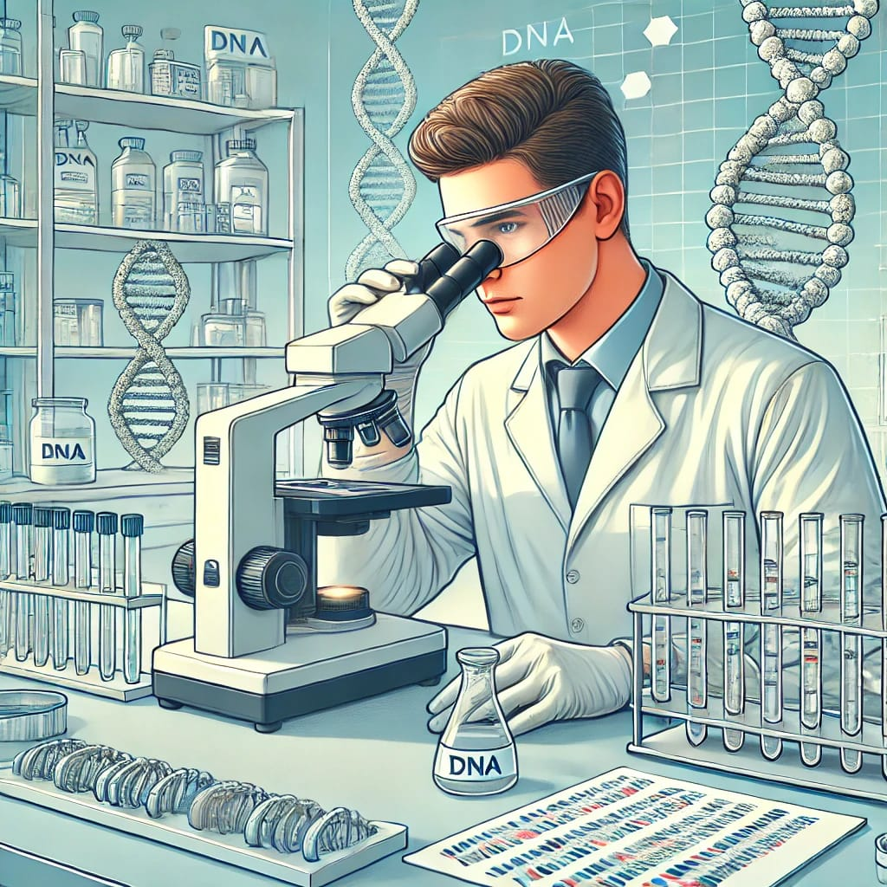

Expertise: General knowledge of aquaculture systems, including fish farming techniques, system designs, and operational management. Role: Help design and manage aquaculture systems for optimal fish health and productivity.
Expertise: Diagnosis, treatment, and prevention of fish diseases. Role: Conduct fish health checks, prescribe medications, recommend vaccination programs, and guide biosecurity measures.
Expertise: Fish feed formulation, dietary requirements, and nutrient optimization. Role: Develop species-specific feed programs to ensure optimal growth, reproduction, and immune system support.
Expertise: Water quality, environmental impacts, and sustainability. Role: Monitor water parameters, manage waste, and design eco-friendly farming systems to reduce the impact on natural ecosystems.
Expertise: Fish biology, behavior, breeding, and population dynamics. Role: Advise on stock selection, spawning practices, and maintaining biodiversity.
Expertise: Disease prevention, quarantine protocols, and pest control. Role: Develop biosecurity plans, monitor disease outbreaks, and mitigate the spread of pathogens.
Expertise: Designing and maintaining aquaculture systems such as tanks, recirculating systems, and water treatment units. Role: Build efficient, cost-effective systems to optimize water flow, aeration, and filtration.
Expertise: Fish genetics and breeding for disease resistance and performance. Role: Guide selective breeding programs for developing healthier, more resilient fish strains.
Expertise: Knowledge of aquaculture regulations, certifications, and legal requirements. Role: Ensure compliance with local and international laws, including environmental and food safety standards.
Expertise: Financial planning, market analysis, and operational optimization. Role: Help with cost-benefit analyses, market trends, and profitability strategies for aquaculture ventures..
Expertise: Sustainable aquaculture practices and alternative systems (e.g., integrated multi-trophic aquaculture, aquaponics). Role: Minimize environmental impact and maximize resource efficiency.
Expertise: Use of IoT, AI, and automation in aquaculture. Role: Implement tools for real-time monitoring, predictive analytics, and operational automation.